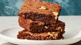

Brownies
Home

Description
Bake these easy brownies whenever you need to quickly satisfy your sweet tooth.
Made with kitchen staples, you'll come back to this easy brownie recipe again and again.
Ingredients
- 2 cups white sugar: These easy brownies start with two cups of white sugar.
- 1 1/2 cups all-purpose flour: All-purpose flour creates structure in the batter.
- 1 cup butter, melted: Two sticks of melted butter give the brownies moisture and richness.
- 4 eggs: Eggs lend even more moisture. Plus, they help bind the batter together.
- 1/2 cup cocoa powder: You'll need cocoa powder for chocolate brownies!
- 1 teaspoon vanilla extract: Vanilla extract enhances the overall flavor of the brownies.
- 1/2 teaspoon baking powder: Baking powder helps the brownies rise.
Steps
- Gather all ingredients.
- Preheat the oven to 350 degrees F (175 degrees C). Grease a 9x13-inch pan.
-
Mix sugar, flour, melted butter, eggs, cocoa powder, vanilla, and baking powder in a large bowl until combined.
- Spread the batter into the prepared pan.
- Decorate with walnut halves or any extra of your likings.
-
Bake in the preheated oven until top is dry and edges have started to pull away from the sides of the pan, about 20 to 30 minutes.
- Cool before slicing into squares. Enjoy!